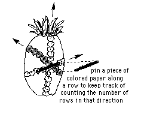

 Buy a
pineapple. (This is one of those lessons that you can really eat up!) Look
carefully at the rows on it. There are three directions of rows. Count the rows
in each direction. This takes a while to see because every pineapple is not
perfect. If you are careful, you can do it! What do you find?
The number of rows in the three directions on the pineapple are 8, 13, and 21. These are 3 consecutive Fibonacci numbers. How can you get from the first two to the third one? Can you write the 4 Fibonacci numbers before these? And the four that are larger?
These Fibonacci numbers form an infinite sequence: 1, 2, 3, 5, 8, 13, 21, 34, 55, 89, ...
Write a program to get these Fibonacci numbers.
Find the ratios of larger to smaller of each consecutive pair of Fibonacci numbers (do about 15 of these). Write the answer to each ratio as a mixed number and a decimal. For example 5/3 = 1 2/3 = 1.666... Fill in the chart below:
How many different size angles are formed?
Knowing that the sum of the angles of a triangle is 180 degrees, figure out the
number of degrees in each of the angles in the diagram.
How many different length segments are formed?
Measure all the lengths of the different segments (in mm.)
Find the ratio of bigger to smaller segments. What do you notice?